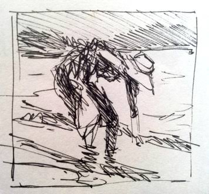
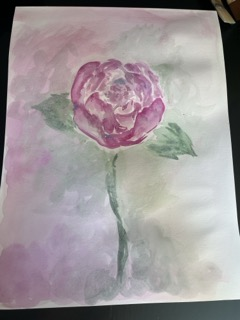
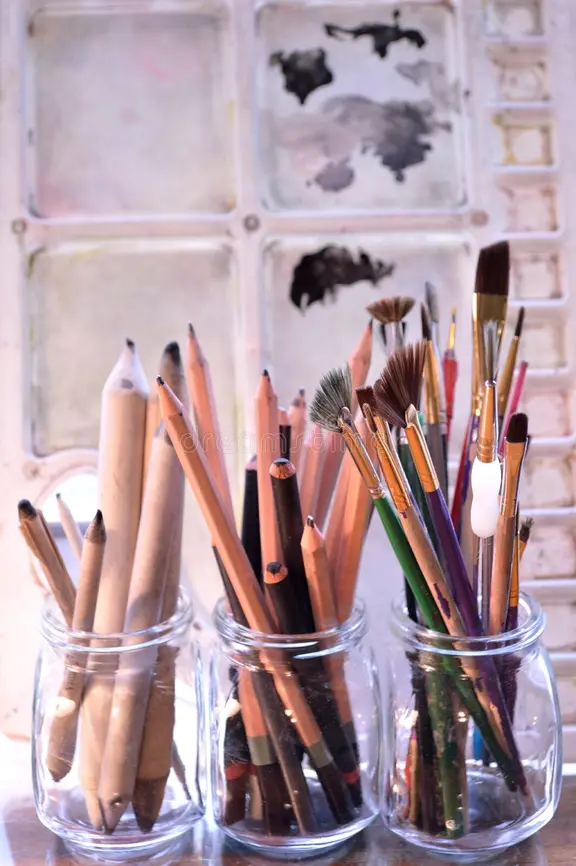
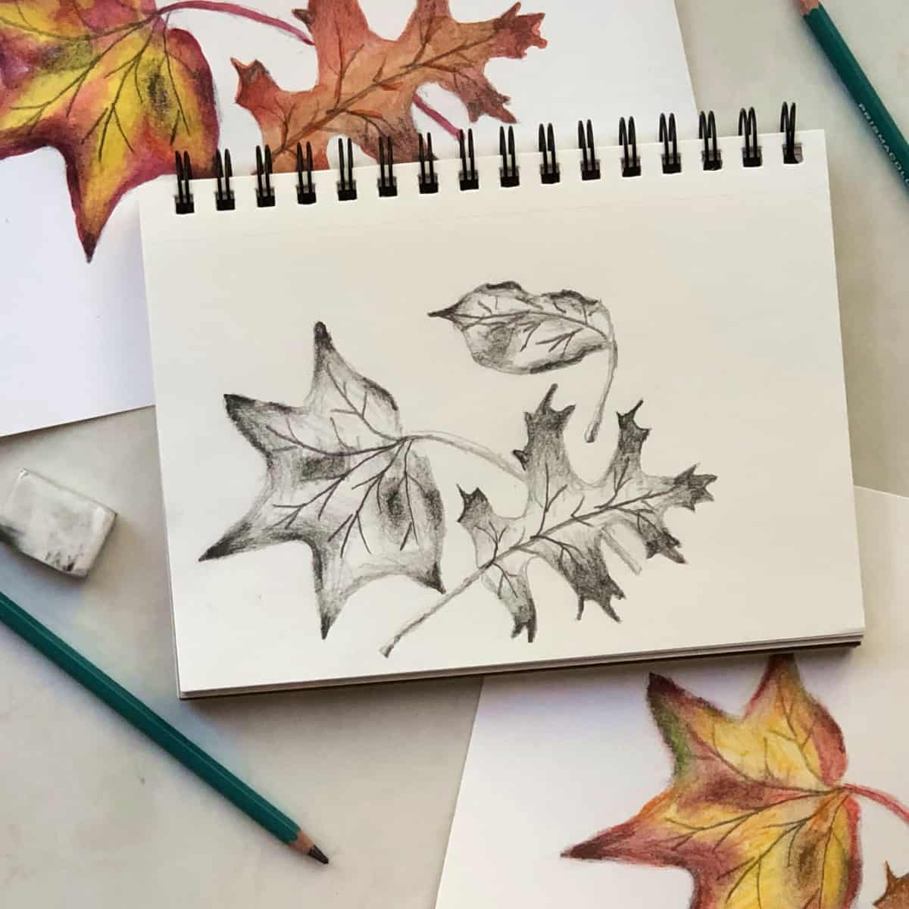

What: The Joy of Drawing
Drawing is making art. A pencil, a scrap of paper, and curiosity are enough to begin.
Sketching can be spontaneous or carefully planned; there is no right way to make a picture. After all, art is subjective: thus, there is very little pressure for success unless you plan to make a career out of it.

AI Prompt: "Find me a picture of a spontaneous looking sketch.
Who
This is my personal story about drawing. I'm Marlene, and I have loved drawing since kindergarten. People are my favorite subjects to draw, and I also enjoy painting landscapes.
When I first started as a child, I was of course using pencil and paper, colored pencils, oil pastels or even chalk. After I got my first iPad at 13, I began making more digital art. These days, digital art is what I do most often, at least when I can.

Source: Marlene Schomaker
When: Find Your Moment
A short daily sketch is easier to keep up than waiting for the time to have a long drawing session.
If you'd like more structure, however, consider these options:
- Five-minute warm-up: lines and circles.
- Weekly session: one longer study.
- Anytime: keep a pocket sketchbook nearby.

AI Prompt: "Give me a picture of art supplies.
Where
Drawing is something you can do anywhere. I like to draw mostly in the comfort of my bed, but it can be done at a table, on the floor, inside, and outside.
To get practice in real life, it is good to go to museums or parks, where you can sketch out things you see.
AI Prompt: "Find me a picture about drawing outside.
How
Drawing is very easy to do, and it requires probably the least amount of equipment. Unlike many other hobbies, you don't need expensive materials to get started.
All you really need is a pencil and paper. Start with these and just draw what comes to mind, shapes or colors, or something you see near you. Although most people won't be good atfirst, all you need after getting started is more practice.
AI Prompt: "Find me a picture of a charcoal drawing or pencil sketch.
Why
Drawing encourages close observation. It is something that requires great attention to detail, which is good if you want to sometimes "slow down and smell the roses."
It can be a calming break from screens and a satisfying way to express ideas without words, or just mindlessly create something.
- Build patience through regular practice.
- Record small moments and memories.
- Enjoy experimenting without pressure.

AI Prompt: "Find me a picture of a leaf sketch.
AI Prompts
Here are the prompts I used on this page.
I also used AI to find some pictures for my pages.
- Give me a good color-scheme for a website.
- What are some good fonts I could use in a website?